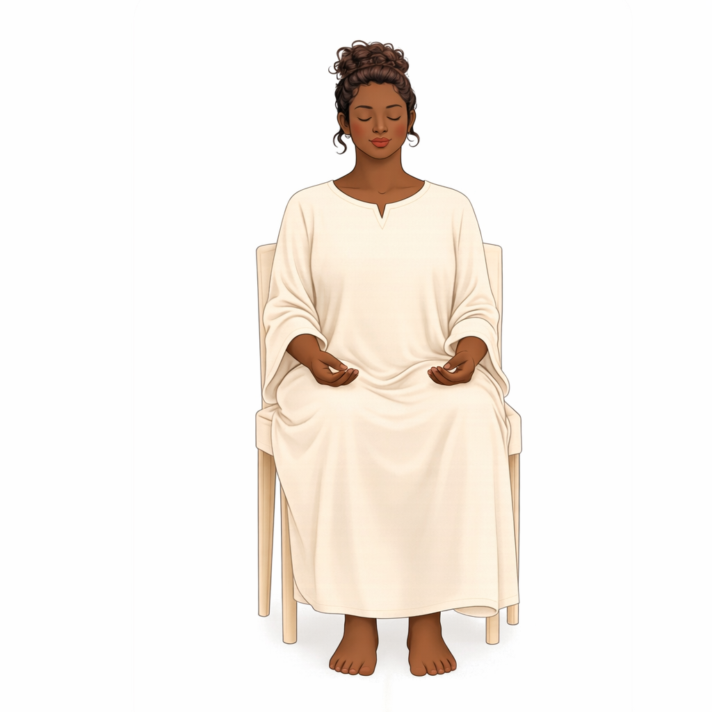

Rose Meditation
Level 1 — Initiation Course
Circuit of Energy of Cosmos & Earth
Both the energy of the Earth and of the Cosmos continue to circulate in a constant flow as they enter, pass through their paths and leave.
Circuit of Energy of Earth
We call on the energy of the Earth to bring the force of transmutation and vitality to the energetic cleansing work we do in the Rose Meditation. The earth receives the personality's hidden weight and dissolves it back into earth.
This activation raises our vibration, promotes energetic unblocking, and brings up issues to resolve.

Circuit of Energy of Cosmos
The energy of the Cosmos is pure consciousness and it helps us to understand deep teachings during the Rose Meditation, one to two feet above our point of receiving so that the energy can pour clean into us.
2Circuit Activation
The full activation has three steps a teacher walks the student through before the first sitting.

Preparation
Before the activation begins, the student sits with feet flat on the ground, hands open on the lap, and breath unforced.
The Sitting
Once the body has settled, the teacher invites the rose into the field of the student. The rose holds whatever the student offers it.
3On Reverence
Reverence is not a posture. It is the quiet recognition that what we touch in this meditation is older than we are.
The Rose Meditation comes from a lineage of teachers who held this practice without writing it down for many generations. When you teach it, you are not delivering content. You are offering a doorway. The student decides whether to walk through.
What the teacher carries forward is not a script. It is the same air the lineage breathed when the teaching first arrived in their teacher's room, and their teacher's teacher's room before that. The script can change without the air changing.
When you sit with a student and the meditation begins, do not perform. Be there. The presence of the teacher is the half of the meditation the student cannot see, and it is the half that does the work.
4